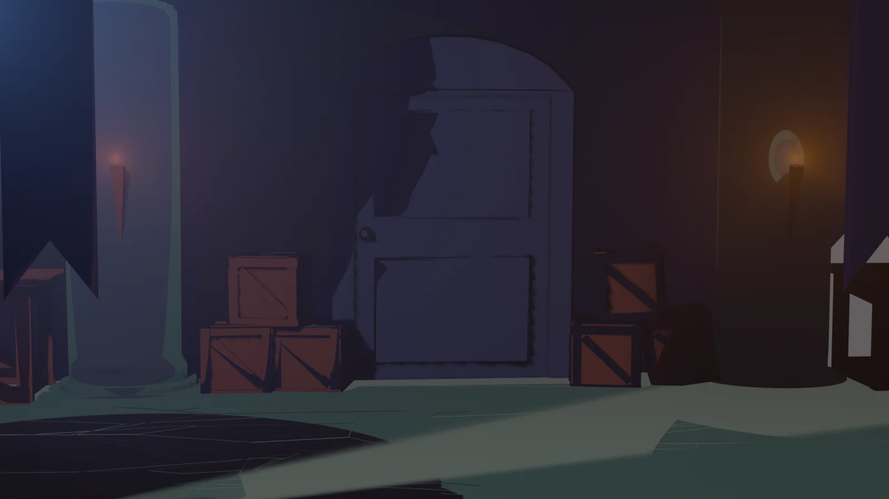

← Todos los proyectos
Escenografía · 3D
Modelado de Escenarios
Una escena interior tridimensional que reúne iluminación, objetos y composición para construir una atmósfera.

SOBRE EL PROYECTO
Un espacio pensado desde la luz y los detalles.
El render presenta un interior con objetos, una ventana y puntos de luz que dan profundidad a la escena. La composición y el contraste entre zonas iluminadas y oscuras construyen su atmósfera.